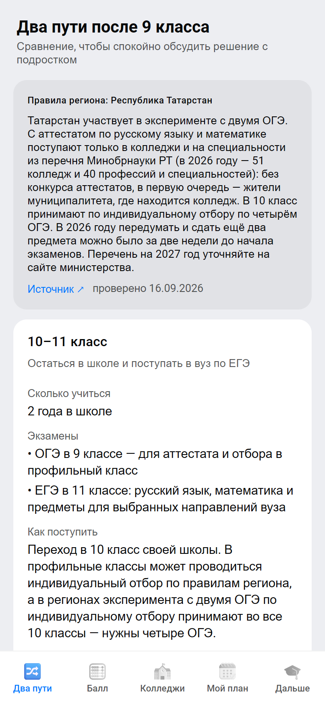
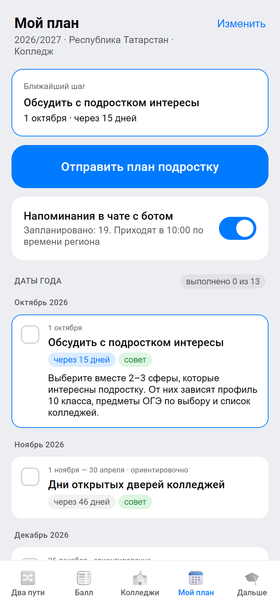
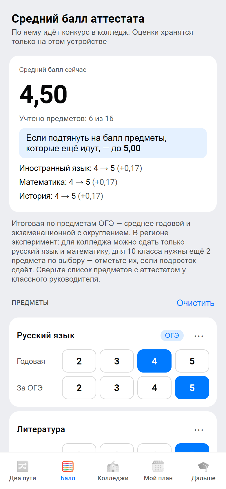
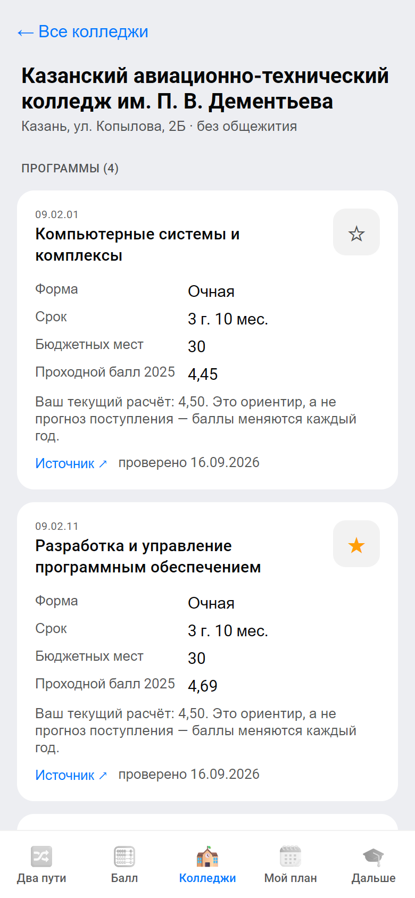
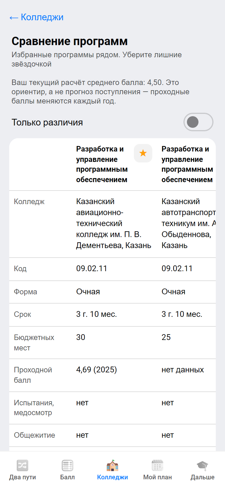
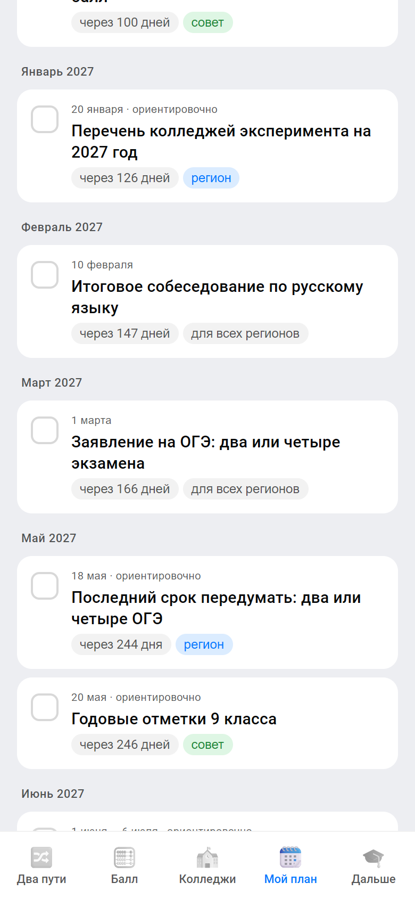

План выбора пути для семьи девятиклассника: 10 класс или колледж — с датами и правилами региона, подсказкой «2 или 4 ОГЭ?», средним баллом, колледжами и напоминаниями родителю и подростку
Трек «Образовательные решения» · пилотный регион — Республика Татарстан
| Бот в MAX | https://max.ru/t567_hakaton_max_bot |
|---|---|
| Мини-приложение | https://158-160-18-41.sslip.io/ — кнопка в чате с ботом |
| Репозиторий | github.com/imaO0O/max-hackaton |
| Commit | хэш коммита на момент сдачи |
| API | https://158-160-18-41.sslip.io/api · docs/openapi.yaml · DATA-API.yaml |
| Окружение | BOT_TOKEN — значение — только в версии для личного кабинета, DOMAIN=158-160-18-41.sslip.io; остальное — .env.example |
| Тестовые доступы | не нужны: справочники API открыты, личные методы подписывает MAX; тестовые данные — демо-регионы А и Б |
Слайд с технической информацией для проверки, в оценке не участвует.
| Команда | название или номер команды |
|---|---|
| Трек | Образовательные решения |
| Участник | Зона ответственности |
|---|---|
| имя участника 1 | зона ответственности |
| имя участника 2 | зона ответственности |
| имя участника 3 | зона ответственности |
Каждое изменение — отдельная ветка и pull request с ревью другого участника. 138 автотестов и проверка справочников в GitHub Actions.
Для кого: родитель ученика 9 класса в регионе эксперимента с двумя ОГЭ, который с сентября по 1 марта выбирает между 10 классом и колледжем. Пилот — Казань. Вторичный пользователь — сам подросток.
| Этап | Как сейчас | С «После 9-го» |
|---|---|---|
| Узнать правила | новости министерства, сайт школы, родительский чат; правила эксперимента — отдельно от федеральных | правила региона в плане с источником и датой проверки |
| 2 или 4 ОГЭ | решение по обсуждению в чате, без учёта выбранной профессии | рекомендация по двум вопросам и перечню эксперимента региона |
| Сроки | 16 дат на четырёх официальных сайтах, напоминаний нет | план года и напоминания в MAX родителю и подростку |
| Средний балл | считают вручную после экзаменов | калькулятор в течение года: какие оценки ещё можно подтянуть |
| Выбор колледжа | 7 сайтов колледжей, прошлогодний балл опубликован у 4 программ из 35 | колледжи по интересам и городу, сравнение программ рядом, источник у каждой |
| Подача документов | часто в один колледж, про медосмотр и испытания узнают поздно | чек-лист из шести шагов с отметками: несколько колледжей, оригинал — в один |
Сервис не подаёт заявления, не рассчитывает шансы на поступление и не заменяет официальные правила: у каждого факта — ссылка на первоисточник и дата проверки.






Ошибка: сдали два ОГЭ — и путь в 10 класс закрыт, а выбранной профессии нет в перечне.
Что делает сервис: два вопроса — куда собирается подросток и есть ли профессия в перечне — и рекомендация с оговорками. Программы из перечня Минобрнауки РТ 2026 года отмечены, в «Колледжах» — фильтр «Можно с двумя ОГЭ».
Бот: /oge, кнопка в меню и под заявлением на ОГЭ. Мини-приложение: экран «Два пути».
Ошибка: документы поданы в один колледж, о медосмотре и вступительных испытаниях узнали поздно.
Что делает сервис: шесть шагов с отметками — документы, медосмотр, испытания, несколько колледжей, рейтинги, оригинал в один колледж. Все шаги отмечены — пункт выполнен, напоминания по нему не приходят.
В «Моём плане» и в карточке пункта в чате, отметки общие.
Риск: правила и условия приёма меняются каждый год, данные устаревают.
Что делает сервис: у программы и даты — кнопка с причинами из списка, без свободного текста и личных данных. Команда видит сводку командой /reports и сверяет факт с источником.
Одна семья сообщает об одной неточности один раз.
| Возможность | Как используется |
|---|---|
| Чат-бот, Bot API | опрос, команды, напоминания с кнопками «Сделано» и «Открыть план»; события через Webhook |
| Мини-приложение | React и MAX UI: интерфейс в стиле MAX, светлая и тёмная темы |
| Подпись initData | сервер проверяет HMAC-SHA256 с токеном бота и срок действия |
| MAX Bridge | BackButton, openLink, downloadFile для календаря, тактильный отклик; у каждого метода — запасной вариант для веб-версии |
| Диплинки | план по ссылке и ссылки для школ с параметром запуска |
| Метрика | Как считаем | Ориентир |
|---|---|---|
| Заявление на ОГЭ вовремя | отметили пункт «Заявление на ОГЭ» до 1 марта / семьи 9 класса | большинство |
| Активация | закончили опрос / запустили бота | 70% |
| Вовлечение подростка | планы, которые открыли по ссылке и подписались | 25% |
| Напоминания | не выключили до 1 марта | 80% |
| Подсказка «2 или 4 ОГЭ?» | прошли подсказку / семьи регионов эксперимента | 50% |
Всё считается по данным продукта — /stats и журнал событий — без персональных данных: ID в MAX, ответы опроса, отметки плана и напоминания.
| Приоритет | Что входит | Статус |
|---|---|---|
| Must | опрос в боте → план года с датами региона → напоминания родителю и подростку; весь сценарий в чате и без мини-приложения; средний балл; колледжи с источником и датой проверки; уведомление о данных и удаление одной командой | сделано |
| Should | «2 или 4 ОГЭ?» с перечнем эксперимента; отправка плана подростку; сравнение программ; чек-лист поступления; удаление данных | сделано |
| Could | календарь .ics; ссылки для школ и метрики; «Сообщить о неточности»; Webhook | сделано |
| Won't | подача заявлений — это делают Госуслуги и приёмные комиссии; прогноз шансов — баллы публикуют редко, прогноз ввёл бы в заблуждение; ИИ-ассистент — правила критичны, ответ должен опираться на первоисточник; интеграции с «Моей школой» и системами колледжей — нужны договорённости с операторами; оценки на сервере | не делаем |
docker compose up --build, HTTPS — профиль https с Caddynpm run data:checkdocs/openapi.yaml| Данные | Статус |
|---|---|
| Татарстан: правила эксперимента, 10 колледжей Казани, 35 программ, региональные даты | реальные источник и дата проверки 16.09.2026 у каждой записи |
| Перечень эксперимента Татарстана 2026 | реальные 8 из 10 колледжей и 8 программ, сверено 27.09.2026; пары «колледж — профессия» министерство не публикует — в интерфейсе «уточните в приёмной комиссии» |
| Ещё 11 регионов эксперимента | реальные участие и правила по 40-ФЗ, сверено 27.09.2026; колледжей в справочнике нет — план по федеральным срокам |
| Федеральные даты 2026/27 | реальные основной период ОГЭ — ориентировочно, расписание 2027 не утверждено |
| Проходные баллы | частично опубликованы у 4 из 35 программ — в остальных «нет данных» и ссылка на источник |
| Демо-регионы А и Б | демо вымышленные колледжи и баллы для сценария проверки, помечены «демо-данные» |
| Интеграция | Статус |
|---|---|
| MAX Bot API, MAX Bridge | реальная |
| Сайты колледжей, Минобрнауки РТ, ФИПИ, Рособрнадзор | модельная данные собраны вручную, не автоматическая загрузка |
| Госуслуги, «Моя школа», системы колледжей | нет |
| Ядро — одно для всех регионов | Переменная часть — на каждый регион |
|---|---|
| проблема и сценарий: опрос → план → напоминания семье | правила эксперимента и перечень колледжей и профессий |
| логика плана, калькулятор среднего балла по федеральному порядку, «2 или 4 ОГЭ?» | региональные даты: отбор в 10 класс, срок изменить решение |
| бот, мини-приложение, API, модель данных, валидатор источников | колледжи, программы, проходные баллы, источники |
| отправка плана подростку, диплинки MAX, ссылки для школ | каналы: школы, родительские чаты, педагоги-навигаторы |
regions.json, colleges.json и key-dates.json. Валидатор не пропустит реальный факт без источника и даты проверки. Уже сейчас: правила всех 12 регионов эксперимента, колледжи и перечень — Казань.
| Шаг | Где | Что нужно | Готовы к следующему шагу, когда |
|---|---|---|---|
| 1. Пилот | 3–5 школ Казани, декабрь 2026 — март 2027 | договорённость со школами, перечень 2027 года в справочнике | активация 70%, подросток подключён в 25% планов |
| 2. Весь Татарстан | 51 колледж перечня, около 48 тыс. выпускников 9 классов | колледжи Набережных Челнов, Нижнекамска, Альметьевска и других городов; Минобрнауки РТ — источник перечня и канал к школам | колледжи региона в справочнике с источниками |
| 3. Регионы эксперимента | сначала Липецкая область (два ОГЭ сдавали 53,4%) и Москва, затем ещё 9 регионов | правила 12 регионов уже в сервисе; дальше — перечень, региональные даты и колледжи крупных городов | подсказка и план работают на данных региона |
| 4. Вся Россия | остальные регионы | федеральные сроки уже работают («Другой регион»); колледжи — по мере партнёрства с регионами | — |
| Риск | Что делаем |
|---|---|
| Данные устаревают, правила меняются | у каждого факта дата проверки; «не проверено», если даты нет; сообщения о неточностях от семей |
| Правила эксперимента различаются по регионам | правила и перечень региона с источником; «не заменяет официальные правила» |
| Сервис принимают за прогноз поступления | шансы не считаем; рядом с баллом — «ориентир, а не прогноз» |
| Подсказку «2 или 4 ОГЭ?» принимают за решение | оговорки в тексте, по умолчанию — четыре экзамена, «обсудите с классным руководителем» |
| Часть методов MAX Bridge не работает в веб-версии | запасные варианты: ссылка копируется, файл открывается в браузере |
| Родители опасаются за данные ребёнка | не собираем имя и оценки; уведомление и согласие до начала работы, /privacy, удаление одной командой |
| Когда | Что |
|---|---|
| Ноябрь | договорённость со школами, обновление данных, 15 минут для классных руководителей |
| Декабрь | запуск в родительских чатах 9 классов по ссылкам для школ и на собраниях после полугодия |
| Январь | перечень эксперимента на 2027 год — обновить за неделю и разослать |
| Февраль | итоговое собеседование, выбор двух или четырёх ОГЭ до 1 марта |
| Март | метрики в /stats и журнале событий, сообщения о неточностях в данных, решение о переходе на весь Татарстан |
data/colleges.json